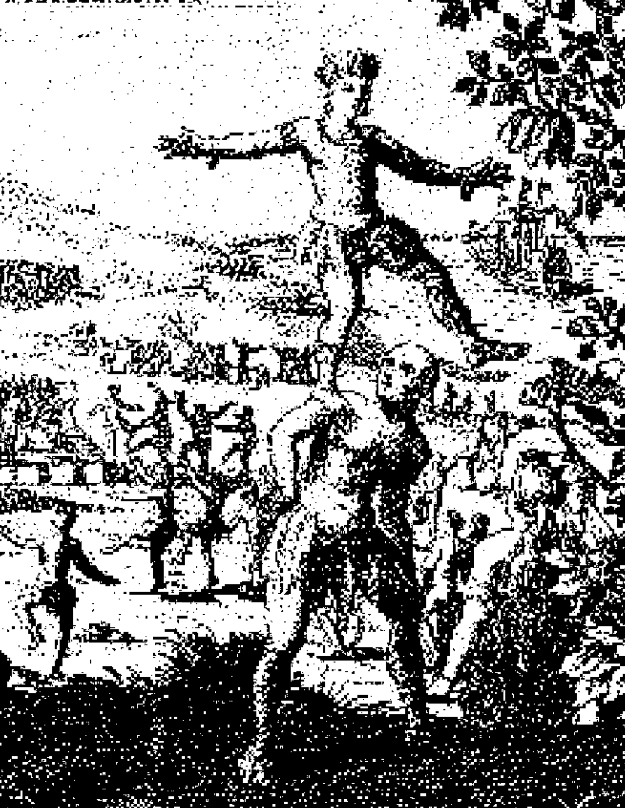
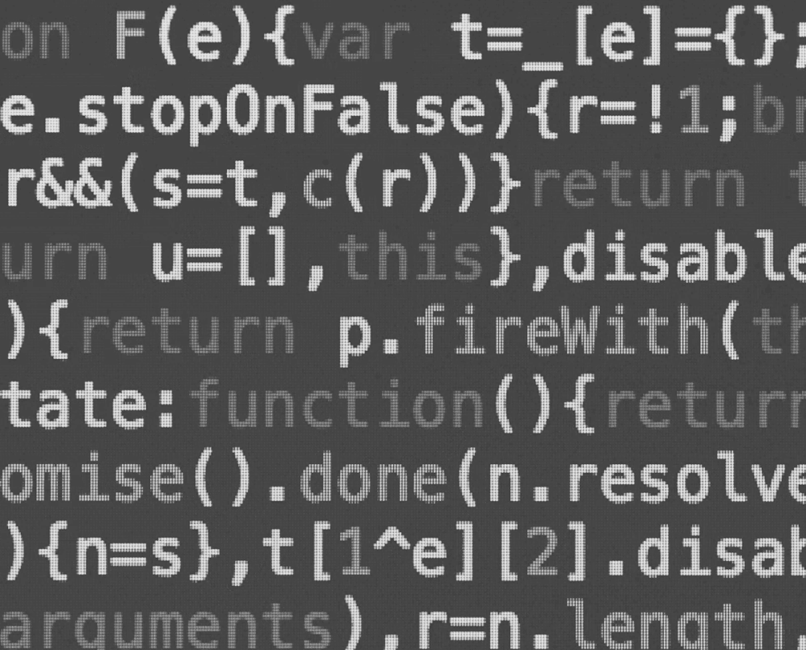

λ Magazine
Open Source Everything
Arise, you have nothing to lose but your barbed wire fences!
Crew Wanted!
For a hazardous journey. Bitter cold, long hours of complete darkness. Safe return doubtful. Honour and recognition in case of success.
Information flow is what the internet is about. Information sharing is power. If you don't share your ideas, smart people can't do anything about them, and you'll remain anonymous and powerless
Vint Cerf
Co-developer of TCP/IP and Internet pioneer
Shared stories matter
Logos is a passionately open-source community that is the product of our collective efforts. We build, learn, experiment, and succeed as one.
Together, we build the Logos technology stack - a collection of modular protocols for consensus, messaging, and storage that champions personal liberties and collective prosperity through efficient decentralised institutions.
We believe everyone should have access to governance that reflects their values and improves their lives. All people should be free to exit hostile, corrupt, and inefficient systems. For the first time in history, we can achieve this.
Logos is not just a collection of individual contributors - it's a civic body. We organise voluntarily to solve problems, uphold values, and build institutions that serve the common good: individual freedom and collective prosperity.



{kind=link}
{kind=link}
{kind=link}
Our culture is based on meritocracy, shared ownership, common responsibility, and transparent governance. Contributions to the community - code, content, ideas - are recognised and rewarded through roles that enable deeper participation in the network. Shoutout to Xav and JosiahWarren for stepping up and being among the first to offer their talents to our cause.
If you're passionate about upgrading society and have skills to contribute to our cause, we need you. Welcome to Logos.
Beyond Westphalia
Every human technology has humans built into it at some point, and the technology thus relies on humans behaving in accordance with certain norms. For example, the technology behind automobiles requires that people use the steering wheel to stay in their proper lanes and not use it to deliberately drive into oncoming traffic. In this respect, decentralised blockchain technology is really no different than automobiles; it has to make certain assumptions about human beings and the kinds of values they hold as they use the technology.
{kind=link}
However, if blockchain technology can be properly aligned with our values (and vice versa), then there is great promise in this project. For the first time in history, we can engineer political systems in which people are coordinated without the need for centralised authorities and centralised methods of control. We can be decentralised yet cooperative. Similarly, we no longer have to be locked together within physical boundaries established by rivers and oceans and previous human conflicts, but each of us can choose a governing system with which we are aligned - a system that, by its very design, will be transparent in its operations yet grant us privacy in our private affairs.
{kind=link}
It is, to be sure, a bold vision of the future. However, given advancements in our understanding of decentralised systems, it is no longer a utopian vision that is out of grasp. It is within our means, and it is not merely possible but inevitable that, very soon, these new forms of political governance will begin appearing on the political landscape.
When they arrive, they will provide us relief from the failures of the Westphalian order, and they will offer creative alternatives for humans to govern themselves in effective yet self-sovereign ways. If we are mindful of the conceptual limits of these new governing technologies and of our responsibilities within these new systems, they will usher in a new era of decentralised-yet-cooperative governance.
A network of builders beats a nation of bureaucrats.
anakata
Co-founder of The Pirate Bay
What is a Network State?
A network state is an online community that develops into a society with its own culture, economy, legal frameworks, and formal institutions. By organising these features atop a politically neutral technology stack, the network state can establish a degree of sovereignty against the prevailing nation-state system, enabling its citizens to administer their own affairs autonomously through voluntary consent-based governance protocols.
{kind=link}
J. J. Grandvile, 1844
"A Bridge Leads from One World to the Next"
Nation states, established with the Peace of Westphalia in 1648, maintain sovereignty within their borders and not beyond them. Therefore, despite offering many advantages over the governance systems that predated them, they struggle to tackle modern, global problems, which demand coordination at the transnational level. Meanwhile, they often fail to address issues affecting their own citizens, whether through malicious intent or negligence.
Technologies advance - few people continue to travel by horseback in the 21st century. Yet we continue to govern with technologies that are almost 380 years old. Now is the time to explore new governance systems that are more suited to the digitally connected world we live in today. Since network states and the technologies they're built on can administer governance digitally and across borders, they represent the next step in human societies.
Defining a network state
A network state is a digitally native, value-aligned community that coordinates its actions around technologies that resist outside interference, enabling it to achieve a degree of sovereignty. Unlike traditional nation states that assert power through territorial control and inherited institutions, network states emerge from decentralised digital communities. These communities typically form around shared goals, belief systems, or missions, using communication and coordination technologies to develop institutions such as legal systems, economies, and governance frameworks.
A key trait of network states is their ability to provision sovereign institutions without reliance on traditional nation states. They achieve this using technologies like blockchain, which allow distributed participants to come to consensus around decision making, even if outside forces want to disrupt the community's organisational capacity. For example, voting for a particular action will take place via a transparent, immutable on-chain mechanism, and network-state economies will often leverage cryptocurrencies that operate in parallel to the legacy financial system.
Since network-state institutions are deployed on permissionless technologies and are provisioned over the Internet rather than exclusively to those born on a specific piece of physical territory, they have a unique ability to provide entirely voluntary governance services. One can easily and affordably opt in or out of these institutions, giving rise to competition in the provisioning of governance services and "polycentric” legal systems.
This ability for citizens to exit unfavourable systems, combined with the transparency of blockchain technology, creates a powerful incentive for network states to strive for efficiency and alignment with their people's values. Meanwhile, the same market forces disincentivise corruption and other wasteful practices that are commonplace within the current nation-state social order. This is similar to how companies in free-market economies strive to provide the best service or product for the lowest price to attract more customers - only network states attempt to enact policies that will attract and retain high-value citizens.
{kind=link}
Wired magazine's 1993 cover depicted three cypherpunks (widely believed to be John Gilmore, Eric Hughes and Timothy May) - the ideological forefathers of the network-state movement.
Source: Wired
Ideological origins of network states
Many people who are already familiar with the concept of a network state attribute the idea to technologist Balaji Srinivasan and his 2022 book The Network State: How to Start a New Country. While the text gives the concept its most recent name and defines it concisely, it fails to delve into its ideological origins, largely ignoring an important body of work that long predates the usage of the term "network state".
The seed of the network state idea can be found in the work of early cypherpunks and crypto-anarchist writers, namely the godfather of crypto-anarchism, Timothy May. He was one of the first to write about the concept in a 1992 article, Libertaria in Cyberspace, in which he described the idea as "Crypto Libertaria", arguing that "An arbitrarily large number of separate 'nations' can simultaneously exist." This allows for rapid experimentation, self-selection, and evolution.
This early vision foresaw a refuge for individuals to voluntarily exit from the state and coercive actors by protecting their "true names" via privacy-enhancing protocols and strong cryptography. May was not alone in his thinking, and several other texts published during the 1990s documented the need for governance structures within the realm of cyberspace.
The American philosopher and co-author of Farewell to Westphalia, Peter Ludlow, anthologised several of these texts in a collection published in 2001 and titled "Crypto Anarchy, Cyberspaces, and Pirate Utopias".
Around the time that the cypherpunk visionaries were theorising about the possibility of cyberspace governance, online communities were forming, highlighting the need for digitally mediated governance processes. A text-based virtual reality environment from the early 1990s, known as LambdaMOO, introduced a community governance system after a player began subjecting others to unsolicited virtual sexual acts. This digital world's nascent legal system included petition systems, voting, and mechanisms for dispute resolution. Later examples of purely virtual worlds, such as Ultima Online and Everquest, would support economies and populations exceeding those of recognised nation states, further validating the need for and potential of cyberspace governance.
Although some early online communities began implementing rudimentary versions of the kind of digital-first governance these theorists envisioned, the issue of sovereignty remained. For digitally mediated governance systems to truly coexist with or even rival those of the nation state, they needed to be able to withstand attempts to undermine them. And given that such systems would, by their very nature, undermine nation-state sovereignty in some domains, those attempts would likely originate from very powerful actors. Then came Bitcoin.
Spears, Hunters and Tribe
Stories matter. Shared narratives matter. And there are no stories without people. This has very little to do with technology. It's all about us, our beliefs, and what we want to see in the world.
In 2009, China bans Tor. Public relays are added to the "Great Firewall". We route around the damage. We create private relays. Tor persists. The technology gains legitimacy.
Tor became the go-to communication tool during the Arab Spring and Occupy movements. When Edward Snowden revealed that the NSA cannot deanonymise it, Tor usage spiked. When more governments failed to stamp it out, new users adopted the technology. With more users comes better packaging and tooling, like Tor Browser. You no longer need to run your own relays to benefit from Tor, and these lower entry barriers attract yet more users.
User surges are not driven by engineers, but by people
Every user surge is a story. Conflict and resolution. As each story concludes, the technology gains legitimacy. We find more use cases. We're talking about nation-state adversaries trying to take down the network. And yet, it persists.
Ethereum also has its shared narratives. The DAO and its hack paved the way for ICOs. New users showed up, drawn by the potential of the new technology. DeFi pump. NFT craze. Memecoins. Each story brings in more people. They improve the technology. Another story unfolds. It's a virtuous cycle.
This is all about stories. Stories matter
{kind=link}
Shared. Narratives. Matter.
And there are no narratives and no stories without people. It's all about people. It's all about their relationships. It's not about technology. Technology is a catalyst and a byproduct.
Open source is not about technology. The community is the goal. In crypto, the community is a tokenised tribe. Every coin is a memecoin. Buying a coin is a vote, a buy-in to believe.
The product is network effects. In the case of Logos, the result of the network effects is freedom, abundance, and purpose.
Blender was a 3D-modelling program which failed during the dot-com bubble. Its creator then crowdfunded the buyback of IP rights from VCs and open-sourced it. To drive development, they started creating open movies using the Blender software, bringing in non-developers. Storyboarders came. Animators came. Voice actors came. They could all now participate and create something in their free time. The movies drove improvements to the technology, and those making them shared them, drawing yet more people into the Blender tribe and encouraging them to create features organically. Fast forward 20 years: Blender is the industry standard.
Blender shows how developing the product is the first story. Community participation is what matters.
{kind=link}
Ton Roosendaal
Blender Founder
Creating the Logos protocols is our first tory, and those building them barely tell it.
We don't think users.
We don't think community.
We think tribe.
{kind=link}
{kind=link}
Logos is our tribe. A networked tribe. The tribe are co-creators. The tribe hunts users.
We bring fresh ideas. We build. We create spears.
We hunt users. We grow our economy.
We solve problems and gain legitimacy.
We build on open technologies, bringing value and creating our own narratives that resonate among each of our networks.
{kind=link}
1
Core Contributor
Core Contributor
2
Developers, Researchers,
Entrepreneurs
Developers, Researchers,
Entrepreneurs
3
Identity Group
Movement
Identity Group
Movement
4
Users
Users
How do We do it?
We make it easy for everyone to help.
We optimise for participation.
We optimise for word of mouth.
We scale beyond ourselves.
We build our tribe, to build an ecosystem,
to build an economy, to build a cryptostate.
Our technology is only the beginning, the catalyst.
Our story is about upgrading human societies.
About reclaiming the Internet.
About privacy, and resilient networks
hosting resilient communities.
About breaking free of inefficiency and waste
and realising collective prosperity.
It's about building tomorrow's world today
and doing something meaningful with our lives.
Open source is not about code.
It's a mindset.
It's a culture.
It's not the responsibility of a few people.
It's our collective duty to
nurture it, to tell the story.
Effort.
Meritocracy.
Responsibility.
Transparency.
It's a virtuous cycle.
It has purpose.
It's a challenge.
It's rewarding.
It's fun.